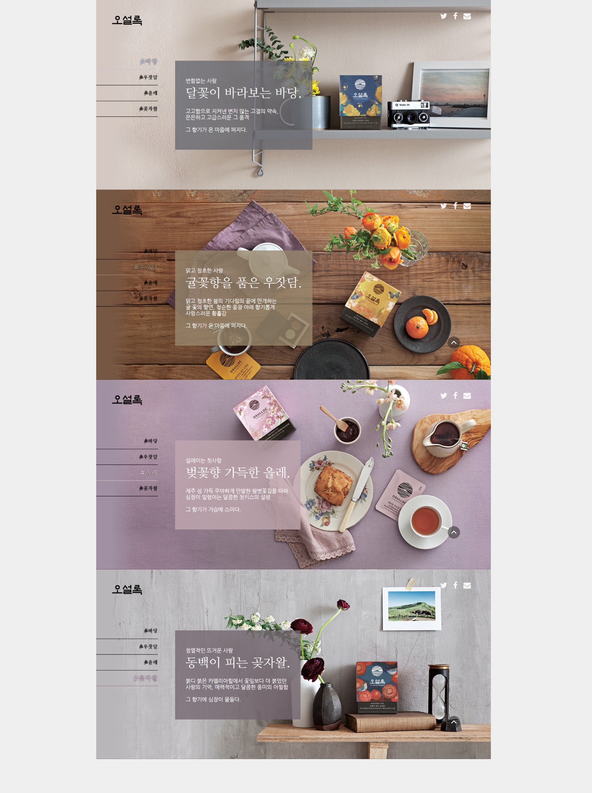

오설록 제품홍보
OVERVIEW
가상의 오설록 시즌 제품 홍보페이지 디자인을 주제로 잡아 오설록만의 자연화 산뜻한 느낌으로 표현하였다. 스크롤을 이용한 Jquery를 이용하여 이미지의 배경 이과 구성요소들의 움직임이나 동작 시간을 다르게 하여 스크롤 할 때에 동적인 느낌을 주도록 표현하였다. Mousewheel 플러그인을 사용하여 재미와 편의성을 주었다.
Mousewheel 이용한 디자인
스크롤을 이용한 Jquery를 이용하여 이미지의 배경 이과 구성요소들의 움직임이나 동작 시간을 다르게 하여 스크롤 할 때에 동적인 느낌을 주어 재미와 편의성을 주었다.
브랜드 아이덴티티의 재정립
오설록에서 중요시 하는 브랜드 컬러와 이미지등을 사용하여 브랜드 아이덴티티를 재정립하였다.
